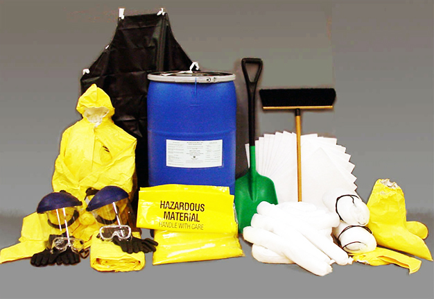
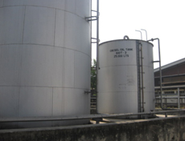
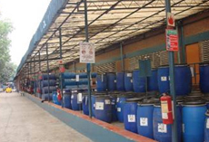
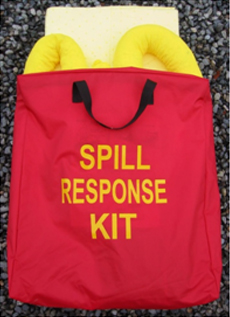
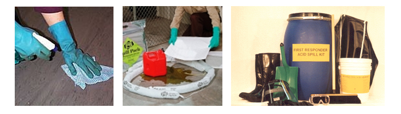
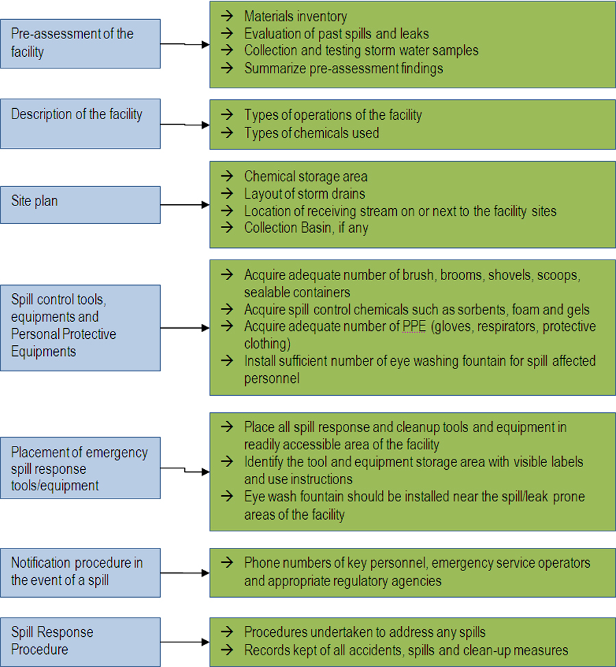

Spill Prevention / Remediation Measures for Spills and
Contamination / Emergency Spill Response
Issue Overview
Chemicals, hazardous materials, and solid and hazardous wastes may be released into the environment while they are stored without proper safeguard measures for spill prevention such as secondary containment structures and the safe enclosure of such materials to prevent their release. In the case of a spill or accident, effective spill and emergency response measures must be in place to reduce the environmental impact of the release. In the case of a sustained or major release into the environment that causes degradation to land or water, remediation measures are required to mitigate the environmental damage. In this regard, the ECA provides a policy framework to address site contamination and spill prevention measures, but no specific standards or requirements have been established in the ECR or elsewhere. According to DOE regulations, Orange B and Red category facilities are to submit emergency response plans in their application for an ECC. The DOE regulates this requirement.
Best Practice
Spill prevention measures are strongly recommended for facilities storing and utilizing chemicals and hazardous materials in their production processes. Some structural methods should be considered as the best spill prevention measures:

Dike—made with earth or concrete materials—can be used to control large spills or releases from liquid storage and transfer areas.
Curb is a barrier that surrounds an area of concern (mainly areas where hazardous materials are handled and transferred) to hold any accidental spills or release of hazardous materials. Unlike diking, curbing is unable to contain large spills and is usually implemented on a small-scale basis.
Collection basin is a permanent structure to receive spills and leaks, and to prevent pollutants from being released into the environment. Unlike dikes or curbs, collection basins can receive and contain materials from many locations across a facility.
Storage cabinets or Shelves may be appropriate for safely storing smaller sized containers of chemicals and hazardous materials, such as paint cans, solvents, cleaners, and aerosol sprays. Ensurance should be made that incompatible materials are not improperly mixed.

Photo: Spill prevention dike in Eos Textiles at the DEPZ

Photo: Curb in Youngone at the DEPZ
Emergency Spill Response includes the cleanup, recovery, treatment, or disposal of spilled materials from a facility so as to protect facility staff and the environment from potential hazards. Spill response activities (mainly cleanup) are physical, mechanical and chemical in type depending on the nature of hazardous properties (e.g. flammable, corrosive) and physical state (e.g. liquid, granular) of spilled materials. It is highly recommended that appropriate staff be trained in the proper and safe implementation of spill clean-ups.
Risk Assessment
Employees responsible for emergency spill response or who are at least trained in chemicals/hazardous materials handling should first assess the risk surrounding a spill or chemical release situation. For instance, they should determine or estimate the extent (volume, toxicity) of the spilled material. Even a very small spill of a highly toxic chemical may cause significant damage.
Risk Factor Assessment
Factors important during the risk assessment include:
Risk Factor Assessment
Factors important during the risk assessment include:
Nature of the hazard properties of the material (i.e., flammability, corrosivity, toxicity);
Degree of hazard and routes of entry;
Physical state (powder, granular, liquid, gaseous); and
Specific circumstances of the release must be considered. These include the location of the spill, the level of ventilation, and the knowledge and experience of area personnel.
A spill occurs only when a system of hazardous material containment fails, usually as a result of a chain of unfortunate events. The potential for chemical spills exists anywhere these materials are stored, used, or transported, and unforeseen chemical spills can threaten employees, and the local environment.
Hazmat Acid Spill Response Kit
The perfect spill kit for the clean up of acid and hazardous liquid spills. Designed for durability in a heavy duty oil and water resistant red nylon bag, with zipper and carry handles. Easily identified with yellow "Spill Response Kit" screenprint.
Standard Contents:
25 Yellow Hazmat Absorbent Pads
2 3" x 4' Yellow Hazmat Absorbent Socks
3 HD Hazmat Disposal Bags
1 Pair of PVC Rubber Gloves
1 Pair of Safety Goggles
Acid and alkali neutralizers can be added to this spill kit.


Planning steps of a Spill Prevention and Control Plan
A spill prevention plan should be implemented for any facility using, handling and storing chemicals, hazardous materials and wastes. The development of a spill prevention plan should include:

Source: The chart was adopted and modified from the US EPA, 1999.
Spill Cleanup Methods
Physical methods are used to cleanup dry chemicals using brooms, shovels, sweepers, or plows.
Mechanical methods include use of vacuum cleaning systems and pumps.
Chemical cleanups may include use of sorbents, gels, and foams.

Sorbents immobilize spilled materials by surface absorption;
Gels interact with spilled materials to form a rigid or viscous material more conducive to a mechanical cleanup;
Foams, mixtures of air and aqueous solutions of proteins and surfactant-based foaming agents, are to primarily reduce the vapor concentration above the spill surface, thereby controlling the rate of evaporation.
Recordkeeping
Labelling of drums, containers and other storage units
Clearly denoted on drum or container with specific hazardous classification;
Listing of all chemicals and hazardous materials used at the facility (estimated volume and their potential hazards);
Location of storage areas (can be shown on Emergency Response Plan);
Written Standard Operations Procedures (SOPs) for the management and use of chemicals/hazardous materials;
The management of secondary containment structures and storage units
Emergency and Spill Response Procedures for accidental releases of the materials into the environment or in contact with an employee;
List of Personal Protection Equipment (PPE) and spill response equipment;
Spill response measures and clean-up procedures.
Spill Prevention Plan;
Training materials for spill prevention and clean-ups;
List of trained personnel for spill clean-up;
List of all spills and follow-up remediation efforts.
Case Study: Spill Prevention and Contingency Preparedness in Savar Dyeing and Finishing Facility at the Dhaka EPZ
Savar Dyeing and Finishing facility produces dyed fabrics and operates an ETP for subsequent treatment of their produced wastewater. Both dyeing and wastewater treatment involve use, handling and storage of chemicals and it is estimated that about 10.67 tons of chemicals are required every week for this process. Among the chemicals used, some are corrosive and flammable and are harmful if in direct contact with the employees.
Savar Dyeing and Finishing, as an environmental compliant manufacturer, has adopted spill prevention and contingency activities that include construction of proper sized secondary containment units for storing chemical drums, small curbs and cabinets for storing paints, solvents, surfactants and other hazardous chemicals that are usually kept in small quantity. Savar Dyeing also maintains emergency clean-up equipment (e.g. eye wash fountain, personal protection equipment, spill kit). Key staff members are trained specifically for undertaking response measures during an accident or spill at their facilities.